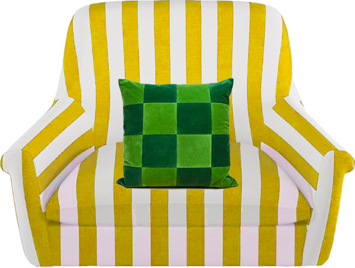

meghan mcneer
contact
instagram
12
:
34
:
56

![A yellow vintage TV sits on top of the mint sidetable, there are knobs to adjust the volume and channel. On the screen there is tablescaping setup dedicated to ice cream. In the scene is a shiney purple tablecloth filled with dishes of ice cream. There is also a bright yellow ashtray with a half smoked joint in it. Meghan art directed this shoot over Zoom during the first month of the pandemic for a THC/CBD Ice Cream company called Saturated. There is a hover over the TV that says Art Direction, clicking it will take you to a page to explore art direction opportunities with Meghan.](./images/mobile/tv_creative_direction.png)